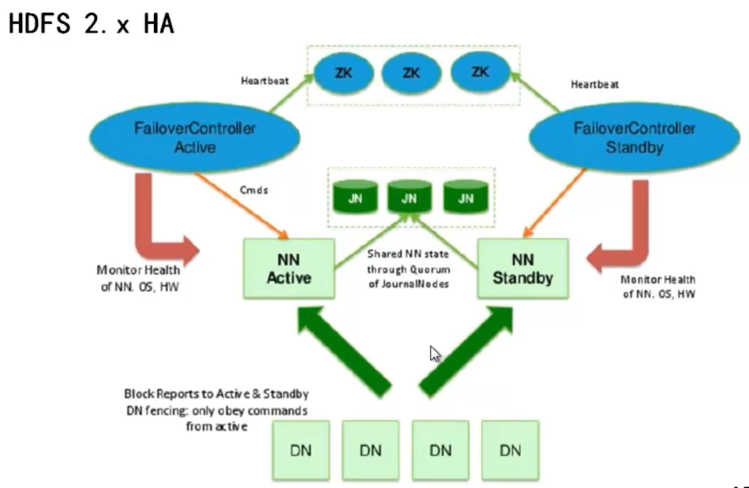
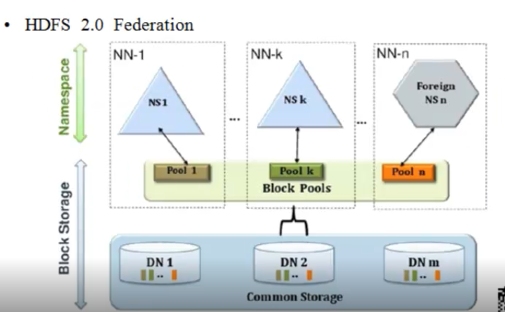
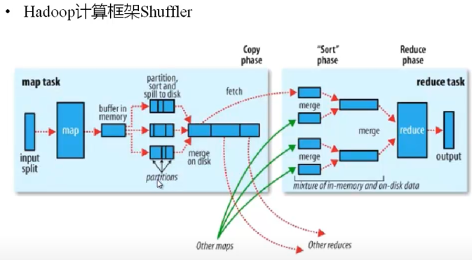
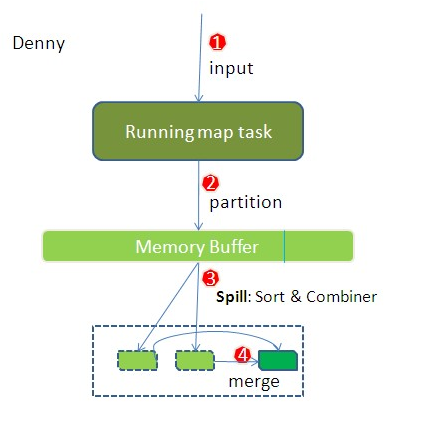

Hadoop系列三：Hadoop2.0基础
复习
就内容而言，最主要的就是2.0加入的HA,以及增加了yarn调度
就案例来看，mr中shuffle的理解才是难点。重写了partition，sort以及group
简介
HDFS存在问题
- NameNode单点故障
难以应用在线场景：HDFS HA:通过主备NN解决。 - NameNode内存受限
HDFS Federation（联邦）
支持多个NN,飞鸽NN分管一部分目录，所有NN共享所有DNN
MapReduce存在问题
JobTracker访问压力大，影响系统扩展
难以支持MapReduce之外的计算框架，比如Spark，Storm等等。
差异
- 在架构上，在HDFS之间增加YARN
- HDFS:NNFederation, HA
- MapReduce:运行在YARN上
- YARN:资源管理器，内存/CPU等。Map，Reduce等任务时，向YARN申请资源.,做到资源的负载均衡
HA

- DN向主备NN都汇报，主NN提供对外服务
- 主NN将元数据存在JN集群中（不再存在本地），辅NN通过加载元数据来实现主辅切换
- NFS(网络文件系统)，其实就是一种数据库集群
- 两种切换
手动切换：通过命令实现主辅之间的切换，可以用作HDFS升级
自动切换：基于Zookeeper实现 - 基于ZK的自动切换
FailoverController(ZKFC)：监控NN健康状态，并向ZK注册
NN挂掉后，ZKFC为NN竞争锁，获得ZK竞争锁的NN变为主
每个NN对应一个ZKFC，ZK个数为基数个 - 客户端通过ZK，来访问NN
总结：HA，就是主辅运行，需要考虑主辅同步（JN），主辅切换（FC,ZK）
Federation

- 通过多个Namenode/namespace把元数据的存储和管理分散到多个节点中，使到namenode/namespace可以通过增加机器来进行水平扩展。
- 把单个namenode的负载分散到多个节点中，在HDFS数据规模较大时候不会降低HDFS性能。可以通过多个namespace来隔离不同类型的应用，把不同类型的HDFS元数据的存储和管理分派到不同的NN中。
- Federation运行来超大的系统中，以电信为例，将短信，通话，上网数据分别存在3个NN中。
总结：其实就是3套HDFS，通过共享DN合并成为一套
YARN
- 实现了接口化，使Hadoop可以引入三方的分布式计算框架
- 引入了分布式资源管理系统
ResourceManager:负责整个集群的资源和调度,只有一个
ApplicationMaster(loadManager):负责应用程序相关的事物,比如人物的调控与容错,可以有多个 - MapReduce作业直接运行在YARN上，而不是由JobTraker和TaskTracker构建.
总结： YARN其实是将Hadoop1.x中的MapReduce的JobTraker与TaskTraker抽象出来，由YARN统一接口。
搭建
修改配置文件
- core-site.xml
- hdfs-site.xml
- slaves
- zookeeper/conf/zoo.cfg
- dataDir=/opt/zookeeper
- server.1 = node1:2888:3888
server.2 = node2:2888:3888
server.3 = node3:2888:3888
- zookeeper配置的dataDirdataDir目录中建立一个myid文件，文件类容为1.2.3
分别制定zookeeper集群的编号
启动
- 启动zookeeper
启动zookeer/bin/zkServer.sh - 启动三个JournalNode
./hadoop-daemon.sh start - 在其中一个namenode上格式化
hdfs namenode -format - 把刚刚格式化之后的元数据拷贝到另外的namenode上
- 启动刚刚格式化的namenode
- 在没有格式化的namenode上执行hdfs namenode -bootstrapStandby
- 启动第二个namenode
- 初始化ZKFC
在其中一个namenode上执行: hdfs zkfc -formatZK - 停止所有节点：
stop-dfs - 全面启动
start-dfs.sh
案例
YearTempSort
- 需求：
以气象数据为例，要求找出每年的最高气温出现的时间，可以推广找出每年前5高气温出现的时间。
数据格式：2014-6-7 12:12:13 34* - 分析：
首先是一种：年、温度、时间的三元关系：以年为分组单位，以气温为排序，是具体时间为数据。
关键点是以年为单位的温度排序。因为其排序都是对key值进行了，所以，需要在map时将年-单位同时作为key。在排序前，以年为单位将数据分区，分组时，依旧需要以年为单位进行排序。最后的reduce只做输出即可。 - 实现：见代码MR_003_YearTempSort
总结：
MapReduce不是并发的，完成Map之后，才会进行Reduce。
这里的patition其实并没有真正的分区，只是打上了标志，sort会对各分区内的数据进行排序，在合并（溢写）的时候才真正的分开，从上开，合并的过程，其实是一排序的过程（可以有很多相等项，根据这些相等的项即可完成分组）。
这里就有一个问题，sort是如何实现的，如果sort时并没有完成分组，其sort也就是根据每个片段上进行了排序，并不是完全的排序，这样溢写之后，排序岂不是就不对了。或者说溢写上磁盘的数据，其实还可以被再次读进内存，进行排序。是一个反复的过程，直到完成。还有一个问题，分区与分组（合并），查看资料，说分区是针对reduce的，打上的标志，就是对应与每一个reduce的。而分组（合并）也是针对与reduce的，这里有重合之处。对于这个问题解答如下：
后来找到一本书，《Pro Hadoop》，里面有一部分内容详细解释了这个问题，看后终于明白了，和大家分享一下。reduce方法每次是读一条记录，读到相应的key，但是处理value集合时，处理完当前记录的values后，还会判断下一条记录是不是和当前的key是不是同一个组，如果是的话，会继续读取这些记录的值，而这个记录也会被认为已经处理了，直到记录不是当前组，这次reduce调用才结束，这样一次reduce调用就会处理掉一个组中的所有记录，而不仅仅是一条了。这个有什么用呢？如果不用分组，那么同一组的记录就要在多次reduce方法中独立处理，那么有些状态数据就要传递了，就会增加复杂度，在一次调用中处理的话，这些状态只要用方法内的变量就可以的。比如查找最大值，只要读第一个值就可以了。
其实在写代码是，一定要注意，MapReduce的过程是不相同的，Map的结果分布在各个机器上的，Reduce任务是要对这些分布在
总结
关于shuffle


这2张图能很好的解释shuffle，shuffle的过程是介于map与reduce之间，其实就是将map的结果怎样传递给reduce的过程。同时，map与shuffle应该都是跑在datanode节点上的，也就是一种分布式的过程。
它经过了4个步骤：partition(分区),sort(排序)，merge（合并），把原来溢写的数据分区，排序，合并成给reduce执行的数据块。
这里有2个问题需要注意；
- sort是针对的什么数据
直观上看，sort结果是将所有的分组内的数据都排序妥善，但在步骤上，又在merge之前，我觉得可能是sort只是对partition的各个数据进行的排序，在merge时，进行了合并排序。 - 分区与分组之间有着类似的处理，为什么？
分区是将数据划分给每个reduce处理，分组也是如此，从资料上看分组可以跨多个分区，分组是逻辑上的一致。
复习总结
- 在yearTempSort过程中，可以看出，重写了partition，sort，以及group，让人容易混肴group与merge。其实group应该不属于map端的shuffle，它属于reduce端的shuffle，在交给各自的reduce处理之前，要进行分组。以便相同的分组数据在一个迭代中去完成。
- sort过程可以看出，sort不仅对比了temp也对比的year，也就是sort前的partition仅仅是打了标志，并没有完成分区。